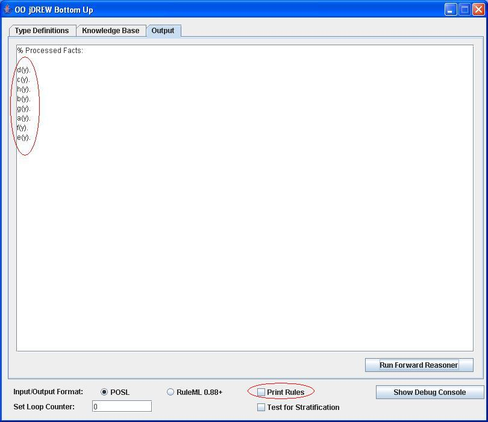
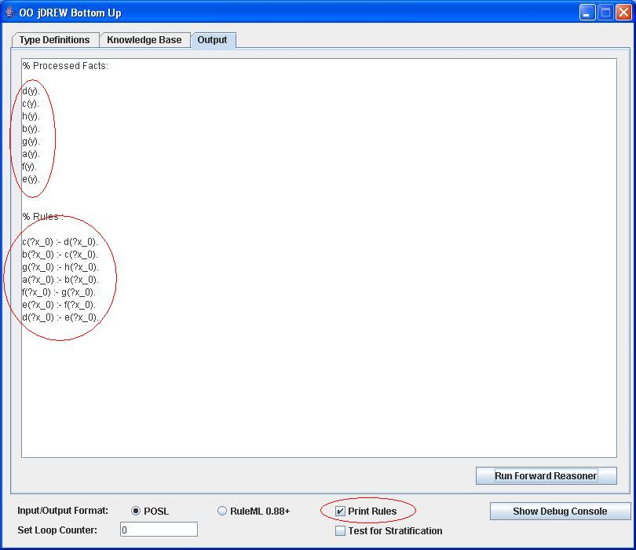
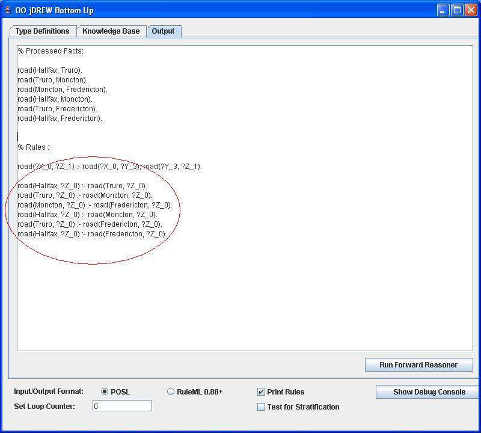

| > Home |
| > Documentation |
| > Downloads |
| > Online Demo |
| > Contact |
Displaying Only Derived Facts or Also Generatated Rules
If we check "Print Rules" then the rules and facts will be displayed. If we leave "Print Rules" unchecked then it will only display the facts.Here is a simple example to demonstrate this.
a(?x) :- b(?x).
b(?x) :- c(?x).
c(?x) :- d(?x).
d(?x) :- e(?x).
e(?x) :- f(?x).
f(?x) :- g(?x).
g(?x) :- h(?x).
h(y).
If we leave the "Print Rules" check box unchecked then we get the following output:

If we check the "Print Rules" check box then we get the following output:

A more complicated example involving generated rules.
road(?X, ?Z) :- road(?X, ?Y), road(?Y, ?Z).
road(Halifax, Truro).
road(Truro, Moncton).
road(Moncton, Fredericton).
This example shows newly generated rules:

Last Updated:
July 25, 2006
By:
Ben Craig